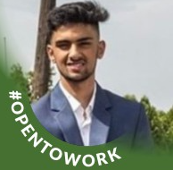

Sawneet Sood

Summary
I am a hardworking and dedicated student in computer science.
Education
- Bachelor of Science, Computer Science - University of British Columbia - Okanagan (2021-Present)
Skills
- Languages: Java, Python, SQL, JavaScript, HTML, CSS, jQuery, PHP
- Tools: MS Office, Git, Visual Studio Code, Docker, XAMPP, Figma
- Soft Skills: Teamwork, Problem Solver, Analytical Thinker, Strong Work Ethic
Projects
- Discord Clone Project: 2024
- Tools used: HTML, CSS, JavaScript, Python, GitHub, Git
- Conducted weekly Scrum meetings, managed progress using GitHub, and reviewed peer contributions via pull requests as a team
- Nutrition App Project: 2024
- Tools used: Figma
- Designed a nutrition app prototype using Figma, including login, home, and recipe search pages
- Web Programming Reddit Clone: 2024
- Tools used: HTML, CSS, JavaScript, PHP, XAMPP
- Developed a full-stack web application mimicking Reddit's forum functionality.
- Database Hosted Website: 2023
- Tools used: HTML, SQL, Java, Docker
- Partnered on a project to create a website allowing users to create accounts, browse items, add to cart, and checkout
- Cat Photo App: 2023
- Tools used: HTML
- Completed a solo project on FreeCodeCamp, creating a cat photo app
Work Experience
- Sales Associate - The Home Depot
March 2023 - Present
- Assisted 30+ customers daily, helping them find products at the best prices.
- Worked as part of a team to restock items efficiently within 10 minutes.
- Resolved 50+ customer queries daily by locating items or restocking shelves.
Other